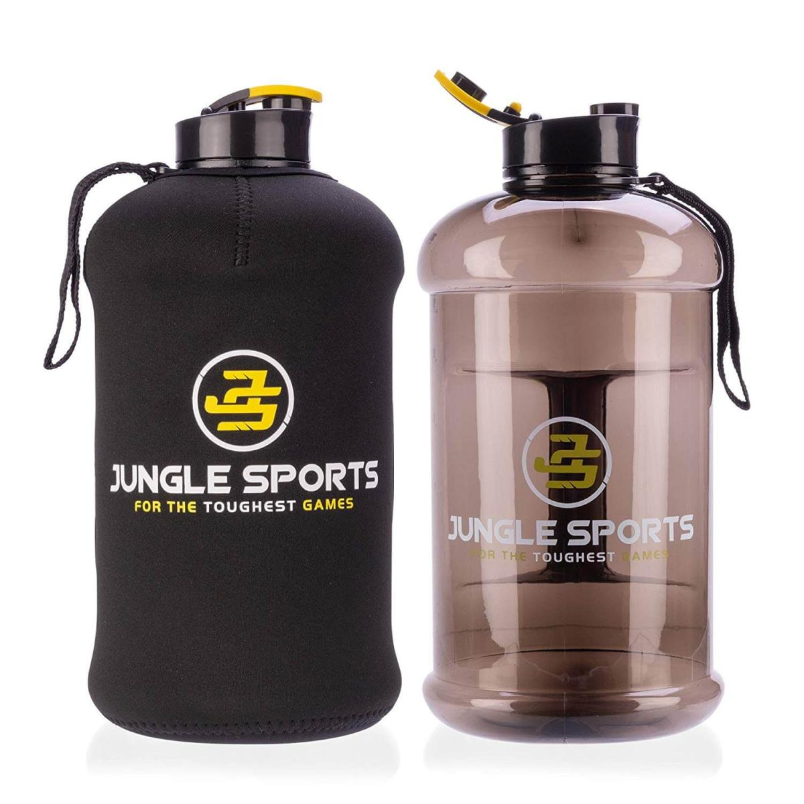

Calisthenics Equipment: Everything a Beginner Needs For Home Workouts
What equipment do you need for calisthenics?The appeal of training calisthenics is that bodyweight exercises can be done with no equipment, making calisthenics great for those wanting to train at home and beginners who are only just starting to commit to a new training regime.
But investing in some calisthenics equipment can significantly increase the variety of exercises you can attempt. This will help you progress much faster with your fitness goals as you find you can mix up your workouts easier and train different muscle groups with greater ease.
In this guide, I’m going to share with you the calisthenics equipment that I’d recommend purchasing to get the best out of your calisthenics workouts.
Essential Calisthenics Equipment
A Pull Up Bar
The first piece of equipment I recommend that you should buy is a pull-up bar.
When most people think of working out at home they would think of ‘push’ type exercises such as push-ups and squats, as these are the type of exercises you can easily complete using nothing more than your body weight. Still, it is essential to also include ‘pull’ type exercises to prevent muscle imbalance which can lead to bad posture.
‘Pull’ type exercises are harder to achieve with just your bodyweight, but that’s where a pull-up bar will become useful. You can also use a pull-up bar to hang other calisthenics equipment from, such as resistance bands and gymnastic rings (more on those shortly…!).
When it comes to buying a pull-up bar, there are several different types of bar available. I recommend reading our guide to the different pull-up bar types to find the pull-up bar best suited to you, but if you know what type of bar you’re after already, then try one of our buyer’s guides below:
Although there are many different pull-up bar types available, the type you choose will depend on numerous factors such as budget, available space, and types of exercise you wish to use it for.
A Set of Resistance Bands
When you think of resistance bands, you may think of those flimsy bands used in Pilates and Yoga that are used for stretching and rehabilitating purposes, however, in this recommendation, I’m talking about the broader ‘flat-loop’ type resistance bands that can be used to assist you when exercising.
Think about this example for a moment; if you were bench pressing with a barbell in the gym, you’d add or remove weight to the barbell until you found a resistance that you are comfortable pushing. As you become stronger, you’d then add weight to the barbell to increase the resistance.
With bodyweight training, you can’t simply adjust your body weight in the same way, but you can use resistance bands to assist your bodyweight, using different size resistance bands to change the amount of assistance offered.
If you were learning how to do a pull-up, you could hang a resistance band from the pull-up bar and loop it around your feet to support some of your weight and make the exercise easier. As you improve, swap the resistance band for a lighter resistance band, and continue to do this until you progress enough to be able to complete a pull-up without the need for assistance.
There are tons of different resistance bands available, so make sure you avoid the cheaper resistance bands which can’t be used to assist your bodyweight.
A Pair of Parallettes
Parallettes are great for training push exercises, dips and L-sits on and if you’re a more advanced user, you can also use them for training handstands and planche on too.
My Gravity Fitness Pro Parallettes was one of the first pieces of calisthenics equipment I bought and is still one of the most frequently used items I use in my home workouts today. The parallettes can easily be stored away, and I can quickly take them out; either for a quick workout in my living room or some handstand training out in the backyard.
A Pair of Gymnastic Rings
Gymnastics Rings have become extremely popular within the calisthenics and CrossFit community over recent years, and this is mainly due to the fact they target muscles in a way that most other equipment and exercises can’t compete with.
Some of the top names within the fitness industry have even moved their sole focus towards ring training, with some of the best ring training programs being advocated by those such as Gold Medal Bodies and Reddit’s r/bodyweightfitness legend, Antranik.
There are many different gymnastic rings available on the market to choose from but don’t worry; we’ve already done the hard work researching these for you!
A Weighted Vest (Advanced Users)

As your ability to perform specific calisthenics exercises improves, you will eventually hit a point where your body weight is no longer offering you enough resistance to (optimally) build strength.
Increased strength is best achieved by training lower reps but with a higher weight. Using the pull-up, for example, if you are at a stage where you can easily perform a set of 10 reps, then you are moving towards volume training.
A weighted vest can be used to add additional resistance to your reps and keep you in the optimal strength training zone.
Chalk (Dry or Liquid)
Chalk is used to help improve your grip, especially when your hands begin to get sweaty. It’s very cheap to buy with a simple climbers ball costing less than £5.
Some people prefer liquid chalk, though I prefer the powdered chalk ball that climbers use. Liquid chalk is less messy as you won’t get specs of chalk dusting everywhere but has a sticky feeling to me which I’m not a big fan of.
Some users opt for a pair of gloves to help with their grip, but I’d recommend trying to refrain from using gloves as much as possible, as it is vital to condition your hands by training without gloves where possible. It will pay off in the long run!
A Large Water Bottle

If you’re working out away from home; whether that’s at the gym, at the park, or in your garden and away from a tap, then you’ll be glad to have a large water bottle at your side.
There is nothing worse than having to end a work out prematurely to go and find some water, so invest in a quality bottle with a large capacity.
The bottle I use is the Jungle Sports 2.2L bottle which is excellent quality and will last you a long time (unless like me you accidentally put it down and forget about it while out on a long run).
Additional Recommended Items
Phone Tripod
When I first started training calisthenics, I found myself getting annoyed at people who would always record themselves training. I thought it was just “showing off for the ‘Gram” and used to really bother me!
I’ve since realised how important it is to film yourself regularly, as there is no better way to improve your form than to watch a recording of yourself back. After all, it often feels like you’ve nailed a calisthenics skill, only to find you were way off the mark when looking back at the video footage. This issue is especially true for handstands and front/back levers!
One of my favourite purchases recently has been a Mpow Flexible Camera Phone Tripod, as I can use this to mount my iPhone without having to try and prop it up using a shoe or water bottle! Even better, the tripod uses flexible legs which allow it to be mounted to anything, so I’ve also been attaching it to the arms of a calisthenics rig to capture footage at eye-level.
Wrist Wraps
I wouldn’t say these are necessary for most people, but if you’re investing a lot of time training handstands, planche, or any other exercise which puts a lot of pressure on the wrist, then you may find a pair of wrist wraps helpful.
I was sent a pair to try by Pullup & Dip (you can read my full review here), and I found they were great for added wrist support.
One thing to watch out for when buying wrist wraps is that most wraps available on the market are those used by weightlifters, which are not the same as shown here. Weight lifters wrist wraps are designed to loop around the dumbbells to help grip additional weight, whereas these types of wrist wraps are designed to hive your wrists additional support while still maintaining a great deal of mobility.
Cardio Equipment
As much as I hate to say it, you shouldn’t neglect training cardio when following a calisthenics workout.
The easiest way to train cardio in the comfort of your own home is by using a treadmill or skipping rope (or why not both?).
My recommendations for these are the Reebok Zr8 Treadmill and the Reebok Zr8 Treadmill Beast Gear Skipping Rope . Use a mixture of both running and skipping to get the most cardio improvements!
Fat Gripz
I previously discussed the benefits of Fat Gripz in the ‘How to Improve Your Dead Hang and Increase Your Grip Strength‘ article and recommend investing in a pair to help work on your forearm strength.
Fat Gripz wrap around any pull-up bar to increase the thickness of the bar, which is highly beneficial for developing grip strength.
Recovery from Calisthenics workouts
A great bodyweight workout can often leave your muscles feeling sore or tight, especially if you’re trying new skills that your body is not used to regularly doing.
I bought myself a foam massage roller and a lacrosse massage ball, which have both been lifesavers for massaging out knots or relieving tight muscles. I would highly recommend these!
The reason for buying both of these items is simple; use the foam roller for larger muscles where you can apply a lot of weight and pressure (such as the back and legs), and use the lacrosse massage ball for pressure points where the foam roller can’t target so well. I have found the best muscles to use the lacrosse massage on is the neck, chest and forearms.
Both items are under £10, and there isn’t a tremendous amount of difference in products available. The items I own are the Maximo Fitness Foam Roller and the Protone Lacrosse Massage Ball.
Nutrition and Supplements
Although not technically equipment, it’s understandable that some readers may want to know about recommend supplements for calisthenics.
For more information about nutrition and supplements, please see our post on supplements for calisthenics.